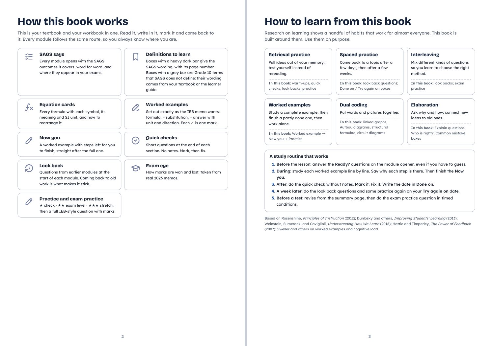
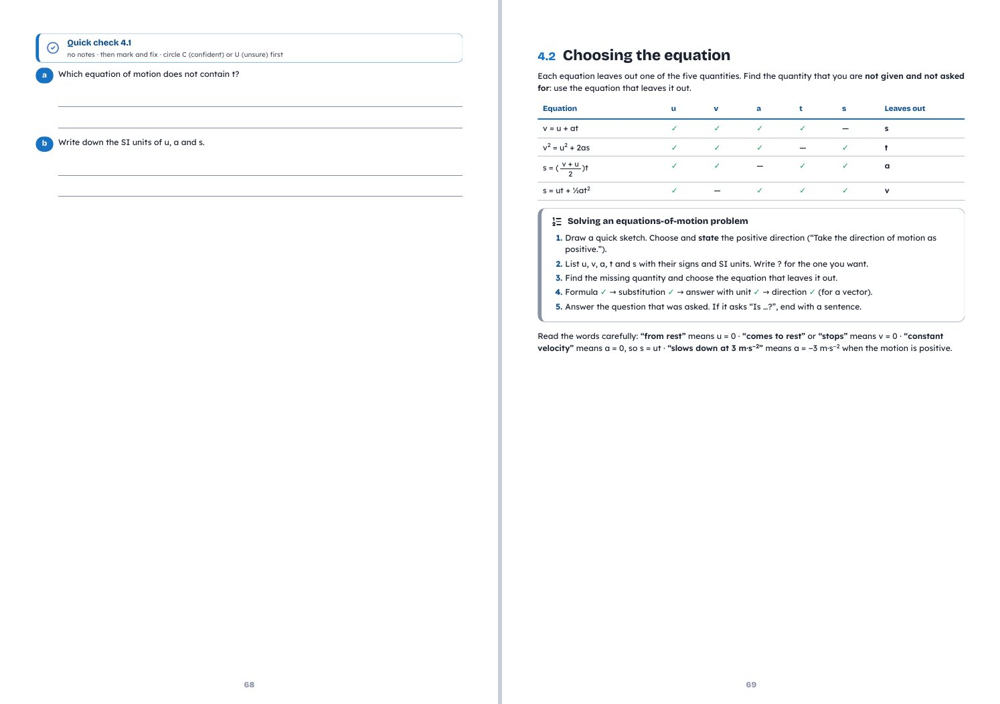
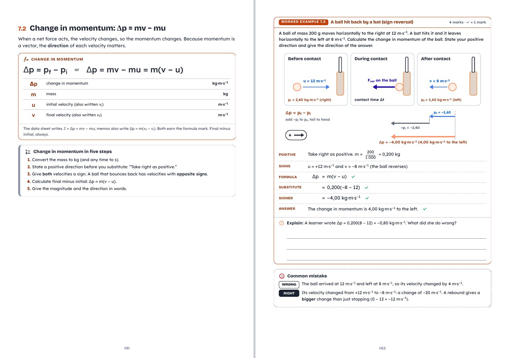

Teacher Starter Kit · lite edition
Build coursebooks, papers and learning apps with AI, through your own lens
This is the public, shortened version of my starter kit: what I give Claude before it builds anything. Your subject knowledge is the lens; the AI does the technical work.
Noel Robert · Physical Sciences · Reddam House Durbanville · November 2026
1 · Start here: the 2-minute way
- Open Claude (a paid plan works best; the desktop app is ideal).
- Give it this page's link, and download the two files below so it can keep them.
- Paste this, filling in the brackets:
"Read this starter kit page and its files first. Use the design lens as your rules. I want to make [a coursebook / an exam paper / a worksheet / a learning app] for [grade and subject]. My sources are [folder or files]. Before you start, tell me which model, effort level and settings to use, then wait for my go. After that, show me a plan and one sample page before building the rest. Do any technical steps yourself and only stop me for sign-ins or approvals."
Then say go, approve the plan, give feedback on the sample, and let it finish.
Design lens checklist (SKILL.md)House style tokens (CSS)
2 · The design lens in one page
Five lenses, all written down
- Curriculum: exact syllabus wording, exam weighting, what examiners reward.
- Learning science: retrieval practice, worked examples that fade, spacing, feedback.
- Learner: calm and clear for weaker readers; a stretch for the bright.
- Print and design: answer space sized from the real worked answer; page spreads; greyscale-safe colour.
- School: house style, crest, "For moderation" labels, versions.
The learning sequence
Explanation → worked example → supported attempt ("Now you") → fresh independent problem → revisit later. Support fades at each step.
Rules worth keeping
- Pair each worked example with a closely related attempt, then remove prompts and vary contexts. Show why each step is chosen.
- Words and diagrams together, with labels beside what they explain. Every colour cue also has a word or shape cue.
- Build in retrieval, correction and later reattempts. Feedback names the first gap and one next action.
- Judge a design by what learners can retrieve, explain and apply later on their own.
- No learning styles, left/right-brain or fixed attention-span claims.
The full checklist is in the SKILL.md download. Install it as a Claude skill so it is applied automatically.
3 · How we build textbooks (short version)
Every module takes the same route
Ready? questions → teaching with worked examples → Now you → quick checks → practice at three levels → an exam-style question → summary → "Done on / Try again on" dates.
A matching answer book
Design the answer book at the same time as the coursebook. Same question codes, same page layout, the model answer sits exactly where the pupil writes, so pupils can mark themselves line by line.
Print-light house style
- One box style: a thin grey frame with an icon and heading. Only the definition box gets a heavy ink bar.
- Common mistakes: dashed frame, WRONG struck through, RIGHT white on ink, so it works without red and green.
- Diagram colours at different lightness so they stay distinct in greyscale. Smallest type 8 pt.
Checks before anything is printed
- Render the real PDF as double-sided spreads, not single pages.
- No split worked examples, no orphan headings, chapters open on a right-hand page.
- Answer space sized from the full worked answer; memo marks cross-checked against the paper.
- Label work "For moderation" while a colleague reviews it; "Final for printing" only after.
4 · House style
Free fonts (Google Fonts): Lexend for body text, Outfit or Bricolage Grotesque for headings, Patrick Hand for worked answers.
Download the colour and font tokens (CSS)
5 · The research behind it
- Rosenshine, Principles of Instruction (American Educator, 2012)
- The Learning Scientists: six strategies for effective learning
- Deans for Impact: The Science of Learning
- American Psychological Association: Top 20 principles for PreK-12 teaching and learning
- Sherrington and Caviglioli, Rosenshine's Principles in Action (book): the visual summaries
6 · Sample spreads
Three spreads from the Grade 10 IEB Physical Sciences coursebook (Edition 1, print-light), built this way.


